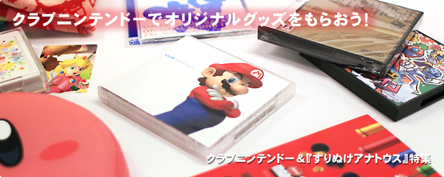
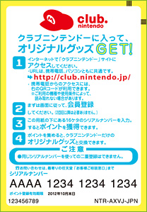

今回ご紹介したオリジナルグッズをゲットするには、まずパソコンでクラブニンテンドーの新規会員登録を行い、登録した「会員ID」と「パスワード」でログインしましょう。会員登録さえ済ませておけば、同じ「会員ID」と「パスワード」を使って、携帯電話のブラウザーやWiiの「インターネットチャンネル」、「ニンテンドーDSiブラウザー」からクラブニンテンドーにログインすることもできます。
ポイント対象商品を複数持っている場合には、クラブニンテンドーのサイトにログイン後、同封されているシリアルナンバーをそれぞれ登録してポイントをもらいましょう。欲しいオリジナルグッズがある場合には、そのグッズと交換できるポイントに到達するまでためておきます。
ポイント対象商品を複数持っている場合には、クラブニンテンドーのサイトにログイン後、同封されているシリアルナンバーをそれぞれ登録してポイントをもらいましょう。欲しいオリジナルグッズがある場合には、そのグッズと交換できるポイントに到達するまでためておきます。

※上記のナンバーは実際に使用できません。
シリアルナンバー登録とともに、簡単なアンケートへの回答が必要です。
一度入力されたシリアルナンバーは、再度使用することができません。
シリアルナンバーには有効期限があり、用紙に印字されています（※一部例外があります）。
クラブニンテンドーの会員年度は、毎年10月1日から翌年の9月30日までの1年間です。
ためたポイントは、シリアルナンバーを登録した年度の翌々年度末まで有効です。
特に、シリアルナンバーを登録せずに有効期限切れにしてしまったり、せっかくためたポイントを失効してしまわないよう、十分に気をつけてください。すでにクラブニンテンドーの会員になっている方は、定期的にポイント履歴と有効期限を確認しておくと良いでしょう。
クラブニンテンドーでは、対象商品の発売から4週間以内にシリアルナンバーを登録するなど、一定の条件を満たすと、追加でボーナスとなるポイントをもらえる場合があります。
また、「Wiiショッピングチャンネル」や「ニンテンドーDSiショップ」の設定画面でクラブニンテンドーの会員IDを登録しておけば、購入した一部のソフトについて、「プレイ後アンケート」に回答してポイントをもらうことができる場合もあります。
こうしたボーナス制度をうまく利用すれば、さらに効率よくポイントをためることができます。高ポイントなオリジナルグッズのゲットを目指すなら、ぜひとも活用したいところです。
また、「Wiiショッピングチャンネル」や「ニンテンドーDSiショップ」の設定画面でクラブニンテンドーの会員IDを登録しておけば、購入した一部のソフトについて、「プレイ後アンケート」に回答してポイントをもらうことができる場合もあります。
こうしたボーナス制度をうまく利用すれば、さらに効率よくポイントをためることができます。高ポイントなオリジナルグッズのゲットを目指すなら、ぜひとも活用したいところです。
クラブニンテンドーの会員は、毎年10月1日から翌年の9月30日の年度内に獲得した「ランクポイント」により、「プラチナ会員」や「ゴールド会員」にランクアップします。プラチナ会員やゴールド会員になると、それぞれ年度ごとに変わるプレミアムな特典グッズがもらえます。
ランクポイントは「1年間で獲得したポイント数の合計」なので、ポイントを使っても減りません。ただし、ランクポイントは毎年10月1日にリセットされるので、「あと少しで特典がもらえたのに！」ということがないよう、しっかりとチェックしておきましょう。
ランクポイントは「1年間で獲得したポイント数の合計」なので、ポイントを使っても減りません。ただし、ランクポイントは毎年10月1日にリセットされるので、「あと少しで特典がもらえたのに！」ということがないよう、しっかりとチェックしておきましょう。